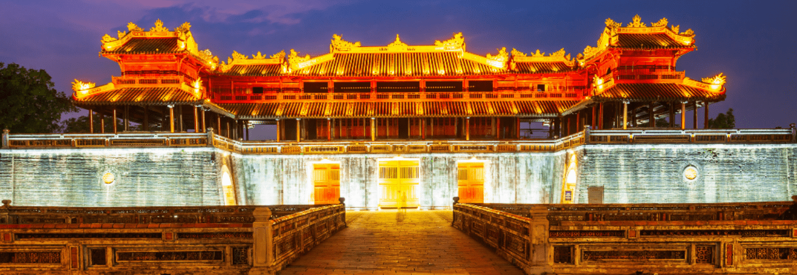
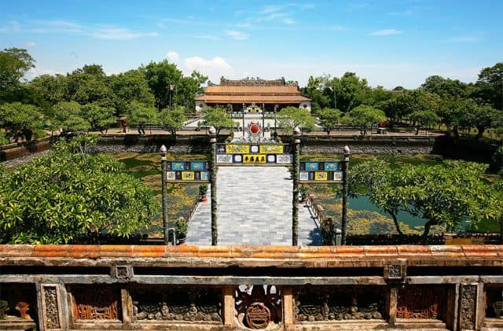
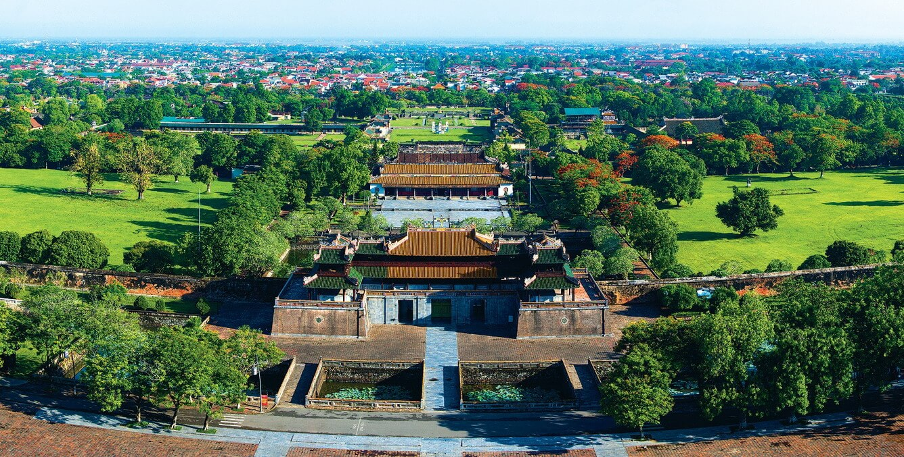
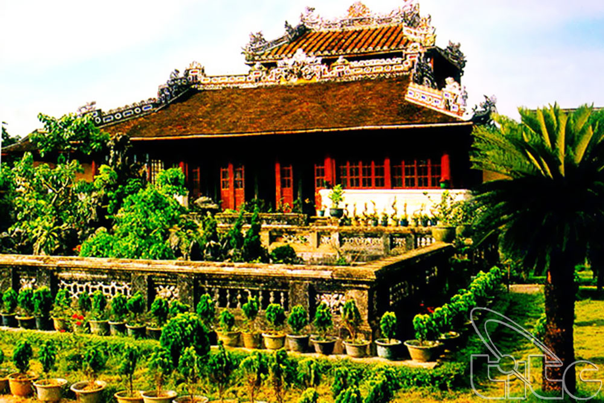
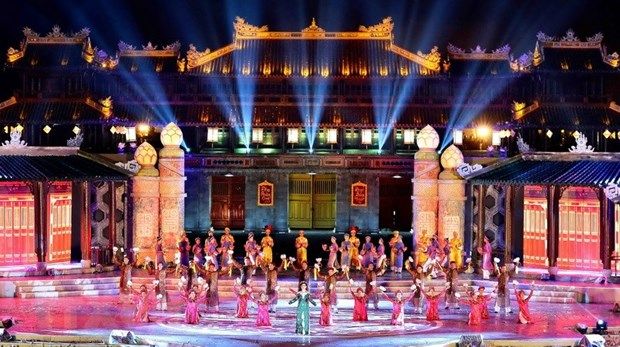

1. Đôi nét về Đại Nội Huế
Địa chỉ: đường 23/8, phường Thuận Hòa, Thành phố Huế, tỉnh Thừa Thiên Huế.
Địa chỉ Đại Nội Huế nằm ở đâu? Đại Nội Huế nằm ở bên bờ dòng sông Hương thơ mộng trữ tình, nơi đây chính là một trong số các di tích thuộc cụm Quần thể di tích Cố đô Huế từ thời nhà Nguyễn.
Đại Nội Huế:được xây dựng vào năm nào? Khu Đại Nội Huế được xây dựng từ đầu thế kỷ 19 đến nửa đầu thế kỷ XX, là một trong số các di tích thuộc cụm Quần thể di tích Cố đô Huế được công nhận là Di sản Văn hoá Thế giới UNESCO từ năm 1993. Toàn cảnh Đại Nội Huế còn lưu giữ nhiều dấu ấn đặc sắc của phong kiến triều đình nhà Nguyễn hàng trăm năm.
Đại Nội Huế chính là nơi sinh hoạt và diễn ra các hoạt động của vua chúa Nguyễn cùng triều đình phong kiến cuối cùng của nước ta.
Đại Nội Huế có thể xem là một công trình có quy mô đồ sộ nhất trong lịch sử Việt Nam từ trước đến nay. Đại Nội Huế có quá trình xây dựng kéo dài trong nhiều năm với hàng vạn người thi công cùng hàng loạt các công việc như lấp sông, đào hào, đắp thành, bên cạnh đó là khối lượng đất đá khổng lồ lên đến hàng triệu mét khối.
Đại Nội Huế có gì? Khu quần thể di tích Đại Nội Huế có hàng trăm công trình với sự dày công xây dựng của nhân dân ta, với vẻ đẹp tráng lệ và kiến trúc cung điện đặc sắc đến cuốn hút lòng người về với xứ Huế.
2. Câu chuyện về lịch sử Đại Nội Huế và đặc điểm kiến trúc
2.1. Lịch sử Đại Nội Huế
Năm 1803 thời kỳ vua Gia Long lên ngôi, ông nhận thấy vùng đất Huế là chốn thanh bình phong cảnh lại thơ mộng chữ tình bên dòng sông Hương. Từ đó, vua Gia Long đã nảy ra ý định chọn vùng đất này là vùng đất làm cố đô của triều đình nhà Nguyễn. Sau 30 năm khởi công xây dựng với bao nhiêu công sức, tổng thể công trình kinh đô mới chính thức được hoàn thành trọn vẹn, Đại Nội Huế mang vẻ đẹp hữu tình, hòa hợp với vẻ đẹp của thiên nhiên.
Đại Nội Huế có hai khu vực chính là Hoàng Thành và Tử Cấm thành, mỗi khu vực lại bao gồm nhiều công trình khác nhau. Khu Hoàng Thành gồm có Cổng Ngọ Môn, Điện Thái Hòa. Tử Cấm Thành là khu vực dành riêng cho vua và hoàng tộc, gồm Đại Cung Môn, Tả Vu và Hữu Vu , Điện Cần Chánh, Thái Bình Lâu, Cung Diên Thọ...
2.2. Khám phá kiến trúc Đại Nội Huế
Kiến trúc Đại Nội Huế trở thành một trong những điểm thu hút du khách khi đến tham quan cùng đất Cố đô Huế.
2.2.1. Khu Hoàng Thành
Cổng Ngọ Môn

Cổng Ngọ Môn hay cửa Ngọ Môn là công trình được xây dựng đồ sộ, hoành tráng với các đường nét hoa văn hết sức kỳ công, tinh xảo và vững chắc. Ngọ Môn không chỉ đơn giản là cổng ra vào mà còn là bộ mặt đại diện cho Đại Nội Cung Đình Huế nên được thiết kế gồm nhiều lớp với hệ thống hào nước xung quanh.
Cổng Ngọ Môn của Hoàng Thành Huế nhìn về phía Nam kinh thành, từ vị trí Ngọ Môn trông xa ra chúng ta có thể ngắm nhìn dòng sông Hương. Cổng Ngọ Môn của khu vực Hoàng thành sẽ có 5 cửa đặt nơi đây, trong đó cửa chính ở giữa từng dành cho vua đi, hai cổng bên dành cho quan văn và quan võ. Còn lại, khu vực hai cổng bên quanh là dành cho binh lính cùng voi ngựa theo hầu vua để bảo vệ cũng như hầu hạ vua.
Trải qua gần 2 thế kỷ và chứng kiến bao mốc sự kiện lịch sử được ghi vào sổ sách của dân tộc của đất nước. Cổng Ngọ Môn vẫn tồn tại theo thời gian và đã trở thành một kiệt tác kiến trúc cổ xuất sắc nơi đây còn là nhân chứng sống cho bao nhiêu dấu mốc quan trọng của lịch sử dân tộc.
Điện Thái Hòa

Điện Thái Hòa là một biểu tượng về quyền lực của Hoàng triều nhà Nguyễn thời bấy giờ, nằm trong khu vực Hoàng thành của Đại Nội Huế. Điện Thái hòa là công trình quan trọng bậc nhất trong tổng thể Đại Nội Kinh Thành Huế, nơi đây cùng Sân Đại Triều Nghi từng là nơi diễn ra các buổi thiết triều của triều đình nhà Nguyễn mà đa số đây điều là những buổi thuyết triều quan trọng.
Điện Thái Hòa được coi là điểm nổi bật nhất mang nghệ thuật kiến trúc cung đình Huế, chất liệu sử dụng chính để xây điện là gỗ lim. Phần mái điện, cột và … được điêu khắc hình rồng uốn lượn đầy tinh tế, tỉ mỉ. Chính giữa điện là ngai vàng của vua được đặt ở vị trí trang nghiêm, nơi vua ngồi trong các buổi thiết triều.
Đại Nội Huế

Khám phá công trình kiến trúc đồ sộ Kinh thành Huế thời Nguyễn
Lăng Minh Mạng Huế - kiến trúc đẹp, chuẩn mực bậc nhất thời Nguyễn
7 lăng tẩm Huế thờ vua triều Nguyễn nổi tiếng và có kiến trúc độc đáo nhất
2.2.2. Khu Tử Cấm Thành
Đại Cung Môn
Đại Cung Môn là cửa chính (hướng nam) vào Tử Cấm thành, gồm có 5 gian 3 cửa và được xây dựng vào thời vua Minh Mạng, năm 1833. Cửa ở gian chính giữa chỉ dành cho vua đi, mặt sau hai bên có hai hành lang nối với Tả Vu, Hữu Vu. Đại Cung Môn nhìn ra sân trước hướng ra Điện Thái Hòa, được xây dựng hoàn toàn bằng gỗ, phía trên lợp bằng ngói hoàng lưu ly. Công trình Đại Cung Môn đã bị phá hủy trong chiến tranh, hiện đang được Trung tâm bảo tồn Di tích Huế nghiên cứu để phục dựng lại.
Tả Vu và Hữu Vu
Tả Vu và Hữu Vu là hai tòa nhà ngay đối diện điện Cần Chánh, xây dựng đầu thế kỷ 19. Tòa nhà Tả Vu được xây dựng cho các quan văn, Hữu Vu là nơi dành cho các quan võ trong triều. Hai tòa nhà này là nơi để chuẩn bị cho các nghi thức trước buổi thiết triều, nơi tổ chức các cuộc thi Đình hay yến tiệc. Hai tòa nhà này là số ít công trình còn sót lại sau chiến tranh, ngày nay Tả Vu được dùng để trưng bày hiện vật, Hữu Vu trở thành nơi dành cho du khách tham quan, chụp hình.
Điện Cần Chánh
Điện Cần Chánh nằm thăng với Điện Thái Hòa theo hướng Bắc Nam, đây là nơi để vua thiết triều. Điện Cần Chánh được xem là điện có kết cấu gỗ lớn và đẹp nhất trong toàn bộ Tử Cấm Thành, Các bộ cột bằng gỗ lim, phần khung phía trên được trạm trổ tinh xảo, công phu.
Thái Bình Lâu
Ảnh minh họa. (Nguồn: Tổng cục du Lịch)
Thái Bình Lâu nằm ở bên trong Tử Cấm Thành của khu Đại Nội Huế, nơi đây sẽ dùng để nhà vua nghỉ ngơi lúc rảnh rỗi, đọc sách, viết văn hay làm thơ thư giãn một khung cảnh rất tuyệt vời đối với những vị vua yêu thiên nhiên. Thái Bình Lâu được xây dựng vào những năm 1919 do Vua Khải Định khởi công được hoàn thành vào năm 1921.
Cung Diên Thọ

Ảnh minh họa. (Nguồn: CTTDT-HUE)
Trong số nhiều cung điện trong Hoàng thành Huế, Cung Diên Thọ được xem là một hệ thống kiến trúc cung điện mang tầm cỡ quy mô nhất ở Huế còn lại cho đến ngày nay vẫn còn nguyên giá trị. Nơi đây từng là nơi ở của các Hoàng Thái Hậu và các Thái Hoàng Thái Hậu những người phụ nữ quyền lực ở bên cạnh vua.
3. Tham quan Đại Nội Huế nên đi tháng mấy?
Nên đi tham quan Đại Nội Huế vào mùa nào đẹp nhất? Giải đáp thắc mắc của nhiều du khách về vấn đề này còn phụ thuộc vào đặc điểm khí hậu và thời tiết của Huế. Tuy nhiên, có hai thời điểm nên đi Đại Nội Huế:
Mùa xuân ở Huế
Dù không rõ rệt nhưng ở Huế vẫn có chút nét đẹp của mùa xuân rất thơ mộng và trữ tình như chính nàng thơ nơi đây vậy. Mùa xuân ở Huế thường kéo dài từ tháng 1 đến cuối tháng 3 , thời tiết lúc này mát mẻ, dễ chịu. Vào thời điểm này những luồng gió lạnh vừa rời xa dòng sông hương mộng mơ thì lúc này cũng là lúc Huế trở nên dịu nhẹ, căng tràn sức sống cùng với thiên nhiên mùa xuân. Cây cỏ cũng dần đâm chồi nảy lộc, những con đường ngập đầy hoa, tô đậm vào bức tranh mùa xuân xanh mơn mởn.
Mùa lễ hội ở Huế
Ảnh minh họa. (Nguồn: TTXVN)
Festival Huế, lễ hội lớn nhất với nhiều hoạt động hấp dẫn du khách
Nếu mà nói đi du lịch Huế mùa nào, tháng mấy hợp lý nhất thì câu trả lời sẽ là cả năm Huế đều đẹp. Tuy nhiên, từ tháng 4 đến tháng 5 là khoảng thời gian được chuộng nhiều hơn. Bởi thời gian này sẽ diễn ra lễ hội Festival Huế. Festival ở Huế được tổ chức hằng năm, được biết là lễ hội lớn và đặc sắc nhất ở Huế cũng như khu vực miền Trung là một trong những lễ hội lớn nhất ở Việt Nam. Những bộ áo dài màu tím thướt tha trong lễ hội Festival Huế mang nét đẹp nàng thơ.
Bạn có cơ hội khám phá, trải nghiệm những nét văn hóa của Huế, trong đó có Lễ hội Festival Huế này cũng là dịp hội tụ hàng loạt các hoạt động nghệ thuật, chương trình giải trí đặc sắc. Festival Huế diễn ra cũng là thời khắc Đại Nội Huế cũng như toàn thành phố được khoác lên mình một lớp áo rực rỡ, lộng lẫy đầy sắc màu. Tấm áo mới này của Huế không khác gì cung điện hoàng gia khi được trang trí những chiếc đèn lồng, đèn điện đủ màu sắc.